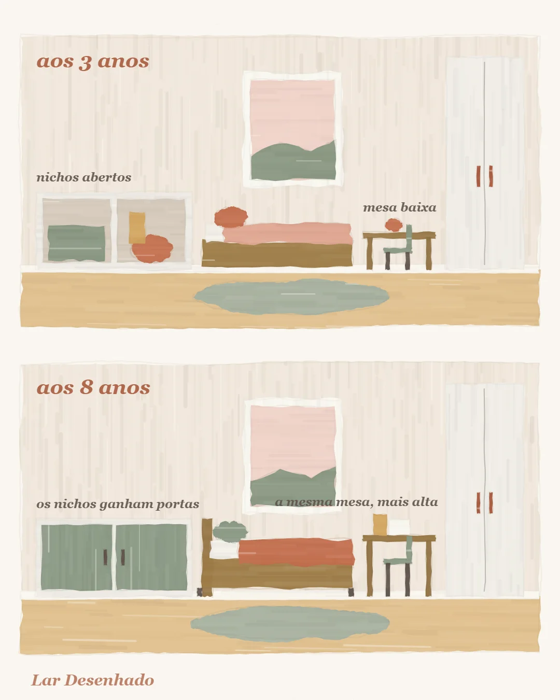

Cada idade, um quarto
O quarto que cresce: como planejar hoje pensando na próxima fase
Equipe Lar Desenhado · 13 de outubro de 2026

Para montar o quarto do seu filho sem ter de refazer tudo daqui a dois anos, separe o que é fixo do que é solto. A marcenaria e o armário já nascem pensando no quarto de amanhã; mesinha, cestos e poltrona atendem a fase de agora e saem quando ela passar. É uma decisão simples, e ela poupa muita obra e muita dor de cabeça.
As fases que os projetos usam
Os projetos de quarto infantil costumam dividir a infância em quatro fases: de 0 a 3 anos, de 3 a 6, de 6 a 9 e de 9 a 12. Não é uma régua rígida, cada criança tem seu ritmo. Mas ajuda a enxergar a regra de ouro: planeje a fase atual já pensando na próxima.
- o quarto do bebê pensando nos 3 anos;
- o quarto dos 3 anos pensando nos 6;
- o quarto dos 6 anos pensando nos 9.
Assim, cada mudança vira um ajuste, não uma reforma.

O que é fixo e o que é solto
Pense em duas camadas.
A camada fixa é a que custa caro para mexer: marcenaria, armário, prateleiras, piso, pintura de base. Ela já nasce com a medida do quarto futuro, não do quarto de hoje.
A camada solta é a que muda com a idade: mesinha, cestos, poltrona de amamentação, tapete, quadros. Ela atende a fase de agora e sai quando não servir mais, sem deixar marca na parede.
Um bom exemplo são os nichos. Hoje eles ficam abertos, com brinquedos e livros à mostra. Amanhã, ganham portas e passam a esconder material de escola e coisas de adolescente.
Na prática, isso significa fazer duas perguntas a cada compra: "isso ainda serve quando ela estiver maior?" e, se a resposta for não, "dá para sair daqui sem estragar nada?". Se as duas respostas forem favoráveis, a escolha está boa. É um jeito leve de decidir, que evita o arrependimento de comprar demais ou de comprar de menos.
A cama que acompanha
Uma cama de solteiro desde cedo acompanha a criança até a adolescência. Já a cama "júnior" dura pouco e logo precisa ser trocada. O colchão de solteiro mede 0,88 × 1,88 m; o compacto, de 0,78 × 1,88 m, ajuda em quarto pequeno e mantém a vantagem de durar muitos anos.
Mesa e cadeira que mudam muito
Nenhuma outra peça muda tanto quanto a mesa e a cadeira. Segundo o Neufert, referência clássica de medidas para projeto, entre 2 e 10 anos a altura da mesa vai de 45 a 73,5 cm, e a do assento da cadeira, de 25 a 44 cm. É uma diferença enorme.
Por isso, vale pensar em mesa regulável ou em mesa que troca de pés. Comprar uma peça por idade é gastar várias vezes com o que uma só resolveria.
Na fase pequena, tudo na altura da criança
Quando o quarto atende uma criança pequena, os brinquedos vivem melhor em nichos e prateleiras abertas, na altura dela. A ideia vem de pedagogias como a Montessori, e na prática funciona bem: o que ela não vê, ela não usa. O armário fechado serve ao adulto, que guarda ali o que não precisa estar à mão.
Cor forte onde é fácil trocar
Cor vibrante e tema ficam nas peças fáceis de trocar, como enxoval e quadros. A base, que é a marcenaria e o piso, fica neutra e atravessa todas as fases. Quando o gosto mudar, e vai mudar, o quarto muda junto sem obra. É também um alívio para o orçamento da família: a parte cara do quarto fica quieta, e a mudança acontece em itens pequenos, que cabem em qualquer época do ano.
O que é fixo já nasce com a medida do quarto futuro; o que é solto cuida da fase de agora.
Para conferir antes de comprar
- A marcenaria cabe também no quarto de daqui a alguns anos?
- Os nichos abertos de hoje podem ganhar portas depois?
- A cama é de solteiro, em vez de uma que logo será trocada?
- A mesa é regulável ou troca de pés?
- Os brinquedos ficam na altura da criança?
- As cores fortes estão em peças fáceis de trocar?
Leia também
- Cama alta e mezanino: as medidas que deixam a brincadeira segura
- Como escolher as cores do quarto infantil sem errar
- Quarto infantil pequeno: o segredo é deixar o meio livre
Fontes
- Ernst Neufert, Arte de Projetar em Arquitetura (medidas de mobiliário infantil)
- Recomendações de projeto de escritórios especializados em quarto infantil
- Princípios da pedagogia Montessori sobre o ambiente da criança